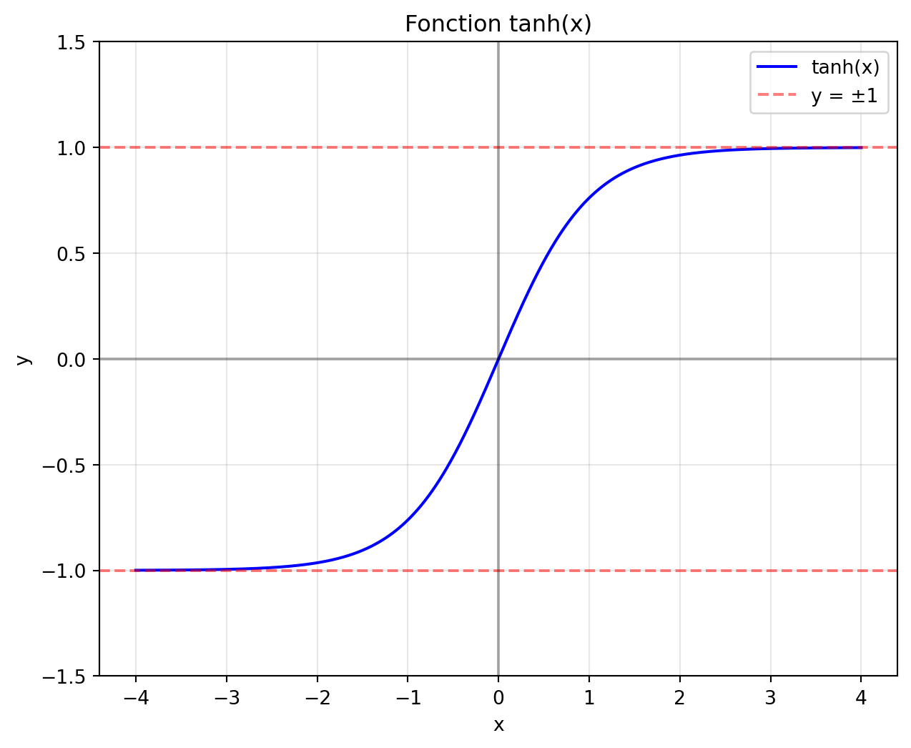
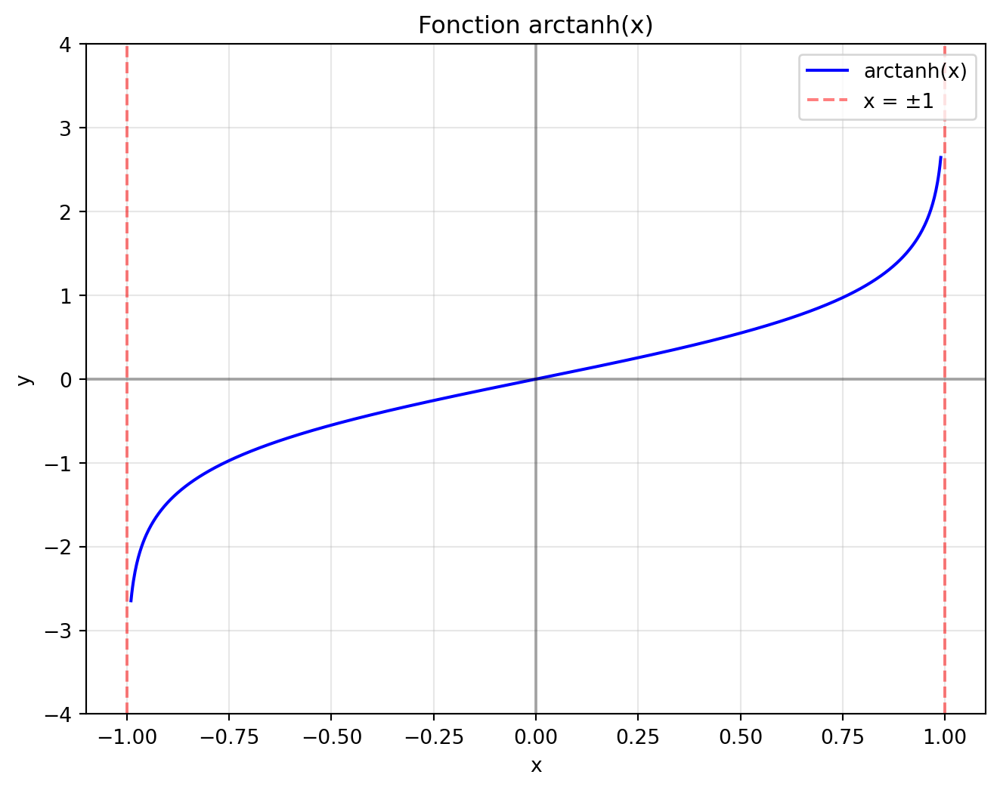
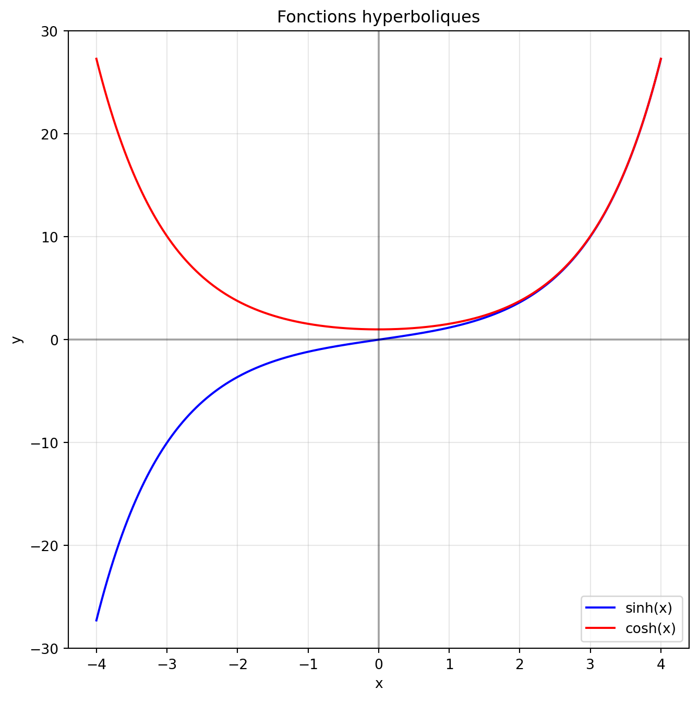
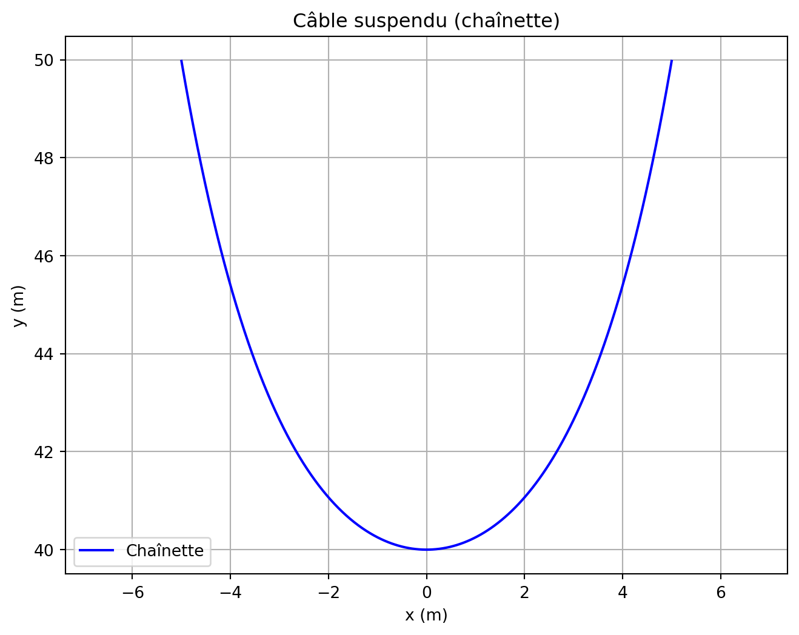

La fonction \(\tanh x\) est définie par : \[\tanh x = \frac{\sinh x}{\cosh x}.\] Effectuez l’analyse de cette fonction afin de pouvoir esquisser son graphique.
Solution.
Code
import numpy as npimport matplotlib.pyplot as plt# Création des donnéesx = np.linspace(-4, 4, 1000) # Intervalle de -4 à 4y = np.tanh(x)# Création de la figureplt.figure(figsize=(7.5, 6))# Tracé de la fonctionplt.plot(x, y, 'b-', label='tanh(x)')# Ajout des asymptotes horizontalesplt.axhline(y=1, color='r', linestyle='--', alpha=0.5, label='y = ±1')plt.axhline(y=-1, color='r', linestyle='--', alpha=0.5)# Ajout des axesplt.axhline(y=0, color='k', linestyle='-', alpha=0.3)plt.axvline(x=0, color='k', linestyle='-', alpha=0.3)# Configuration du graphiqueplt.grid(True, alpha=0.3)plt.title('Fonction tanh(x)')plt.xlabel('x')plt.ylabel('y')plt.legend()# Ajustement des limitesplt.ylim(-1.5, 1.5)plt.show()

Montrez que la fonction réciproque de \(\tanh x\), notée \(\text{arctanh}\,x\), peut s’exprimer par \[\text{arctanh}\,x = \ln \sqrt{\frac{1+x}{1-x}}.\]
Solution. Montrons que \(\text{arctanh}\,x = \ln \sqrt{\frac{1+x}{1-x}}\). Posons \(y = \text{arctanh}\,x\). Par définition, cela signifie que \(x = \tanh y\). La fonction tanh est définie par : \[\tanh y = \frac{\sinh y}{\cosh y} = \frac{e^y - e^{-y}}{e^y + e^{-y}}.\] Donc nous avons que \(x = \dfrac{e^y - e^{-y}}{e^y + e^{-y}}\). Multiplions les deux membres par \((e^y + e^{-y})\) : \[x(e^y + e^{-y}) = e^y - e^{-y}.\] Développons : \[xe^y + xe^{-y} = e^y - e^{-y}.\] Regroupons les termes en \(e^y\) et \(e^{-y}\) : \[e^y(x-1) = e^{-y}(x+1).\] Donc : \[\frac{e^y}{e^{-y}} = \frac{x+1}{1-x}.\qquad(x\neq 1)\] Simplifions : \[e^{2y} = \frac{1+x}{1-x}.\] Prenons le logarithme naturel des deux côtés : \[2y = \ln\left(\frac{1+x}{1-x}\right).\] Donc : \[y = \frac{1}{2}\ln\left(\frac{1+x}{1-x}\right) = \ln\sqrt{\frac{1+x}{1-x}}.\] Puisque \(y = \text{arctanh}\,x\), nous avons bien \[\text{arctanh}\,x = \ln\sqrt{\frac{1+x}{1-x}}.\]
Esquissez le graphique de \(\text{arctanh}\,x\).
Solution.
Code
import numpy as npimport matplotlib.pyplot as plt# Création des donnéesx = np.linspace(-0.99, 0.99, 1000) # On évite -1 et 1 car arctanh non définiy = np.arctanh(x)# Création de la figureplt.figure(figsize=(8, 6))# Tracé de la fonctionplt.plot(x, y, 'b-', label='arctanh(x)')# Ajout des axesplt.axhline(y=0, color='k', linestyle='-', alpha=0.3)plt.axvline(x=0, color='k', linestyle='-', alpha=0.3)# Ajout des asymptotes verticalesplt.axvline(x=1, color='r', linestyle='--', alpha=0.5, label='x = ±1')plt.axvline(x=-1, color='r', linestyle='--', alpha=0.5)# Configuration du graphiqueplt.grid(True, alpha=0.3)plt.title('Fonction arctanh(x)')plt.xlabel('x')plt.ylabel('y')plt.legend()# Ajustement des limites pour mieux voir les asymptotesplt.ylim(-4, 4)plt.xlim(-1.1, 1.1)plt.show()

Question 2
Exprimez \(\cosh(x+y)\) en fonction de \(\cosh x\), \(\cosh y\), \(\sinh x\) et \(\sinh y\).
Solution. Exprimons \(\cosh(x+y)\) en fonction de \(\cosh x\), \(\cosh y\), \(\sinh x\) et \(\sinh y\). Rappelons que \(\cosh(x+y)\) peut s’écrire en utilisant la forme exponentielle \[\cosh(x+y) = \frac{e^{x+y} + e^{-(x+y)}}{2}.\] Développons \(e^{x+y}\) et \(e^{-(x+y)}\) : \[\cosh(x+y) = \frac{e^x e^y + e^{-x} e^{-y}}{2}.\]
Rappelons les formules : \[\cosh x = \frac{e^x + e^{-x}}{2} \quad \text{et} \quad \sinh x = \frac{e^x - e^{-x}}{2}.\] Donc : \[e^x = \cosh x + \sinh x \quad \text{et} \quad e^{-x} = \cosh x - \sinh x\] Substituons ces expressions dans notre équation : \[\cosh(x+y) = \frac{(\cosh x + \sinh x)(\cosh y + \sinh y) + (\cosh x - \sinh x)(\cosh y - \sinh y)}{2}.\] Développons les produits : \[\begin{align}
\cosh(x+y) &= \frac{1}{2}\left(\cosh x \cosh y + \sinh x \cosh y + \cosh x \sinh y + \sinh x \sinh y + \cosh x \cosh y\right.\\
&~\left.- \sinh x \cosh y - \cosh x \sinh y + \sinh x \sinh y\right).
\end{align}\] Regroupons les termes semblables : \[\cosh(x+y) = \frac{2\cosh x \cosh y + 2\sinh x \sinh y}{2}\] Simplifions : \[\cosh(x+y) = \cosh x \cosh y + \sinh x \sinh y\] Nous avons donc la formule cherchée : \(\cosh(x+y) = \cosh x \cosh y + \sinh x \sinh y\).
Question 3
Résolvez l’équation \(\sinh(2x) = 3\).
En déduire les solutions de l’équation \(\cosh(2x) = \sqrt{10}\).
Ces deux équations sont-elles liées ? Justifier votre réponse.
Solution.
Par définition, \[\sinh(2x) = \dfrac{e^{2x} - e^{-2x}}{2} = 3.\] On en déduit que \(e^{2x} - e^{-2x} = 6\). Posons \(y = e^{2x}\). Ainsi, \(y - \frac{1}{y} = 6\), d’où \(y^2 - 6y - 1 = 0\). On en déduit que \[y = 3\pm 2\sqrt{2}.\] Comme \(e^{2x} > 0\), on déduit que \(e^{2x} = 3 + 2\sqrt{2}\). En prenant le logarithme, on arrive à isoler \(x\) pour obtenir \[x = \frac{1}{2}\ln\left(3 + 2\sqrt{2}\right).\]
Utilisons l’identité \(\cosh^2(x) - \sinh^2(x) = 1\), valable pour toute valeur de \(x\). Si \(\sinh(2x) = 3\), alors \(\cosh^2(2x) = 10\). Ainsi, \(\cosh(2x) = \pm\sqrt{10}\). Comme \(\cosh(x) \geq 1\) pour tout \(x\), \(\cosh(2x) = \sqrt{10}\). On trouve la même solution, à savoir \[x = \frac{1}{2}\ln\left(3 + 2\sqrt{2}\right).\]
Ces équations sont liées par l’identité \(\cosh^2(x) - \sinh^2(x) = 1\). Quand on connaît \(\sinh(2x)\), on peut déduire \(\cosh(2x)\). Les solutions sont les mêmes car \(\sinh(x)\) et \(\cosh(x)\) sont liés.
Question 4
Tracer sur un même graphique les fonctions \(f(x) = \sinh(x)\) et \(g(x) = \cosh(x)\).
Solution.
Code
import numpy as npimport matplotlib.pyplot as plt# Création des donnéesx = np.linspace(-4, 4, 1000)sinh = np.sinh(x)cosh = np.cosh(x)# Création du graphiqueplt.figure(figsize=(8, 8))plt.plot(x, sinh, 'b-', label='sinh(x)')plt.plot(x, cosh, 'r-', label='cosh(x)')# Configuration du graphiqueplt.grid(True, alpha=0.3)plt.title('Fonctions hyperboliques')plt.xlabel('x')plt.ylabel('y')plt.legend()plt.axhline(y=0, color='k', linestyle='-', alpha=0.3)plt.axvline(x=0, color='k', linestyle='-', alpha=0.3)plt.show()

Analyse du graphique 1. La fonction \(\sinh(x)\) : * Est impaire * Passe par l’origine * N’atteint pas de maximum ni de minimum
Démarche semblable à celle exigée à la question 2.
Nous avons que \[\begin{align}
\tanh(x) + \tanh(y) &= \frac{\sinh(x)}{\cosh(x)} + \frac{\sinh(y)}{\cosh(y)}\\
&= \frac{\sinh(x)\cosh(y) + \cosh(x)\sinh(y)}{\cosh(x)\cosh(y)}\\
&= \frac{\sinh(x+y)}{\cosh(x)\cosh(y)}\qquad\text{(d'après (a)).}
\end{align}\]
Question 6
Un câble pesant est suspendu entre deux points situés à une hauteur commune de 50 mètres et distants de 10 mètres. Le point le plus bas du câble est à 10 mètres sous les points de suspension. Trouvez l’équation de la chaînette passant par ces points. Remarques : vous pouvez supposer que la droite \(x=0\) est un axe de symétrie de la chaînette. Aussi, vous aurez besoin d’utiliser un logiciel pour calculer un des paramètres.
Solution. La solution sera présentée en classe.
L’équation d’une chaînette est de la forme \(y = a \cosh(\frac{x}{a}) + k\). Les points de suspension sont en \((-5,0)\) et \((5,0)\) et le point le plus bas est en \((0,-2)\). Ainsi, nous obtenons les équations \[\begin{align}
-2 &= a \cosh(0) + k,\\
0 &= a \cosh(5/a) + k.
\end{align}\]\[\begin{align}
-2 &= a + k,\\
0 &= a \cosh(5/a) + -2-a.
\end{align}\]
L’équation \(0 = a \cosh(5/a) + -2-a\) se résout numériquement (par exemple avec WolframAlpha). On trouve que \(a \approx 3.95\). On en déduit ensuite que \(k\approx -5.95\). Ainsi, l’équation de la chaînette est \[y = 3.95 \cosh\left(\frac{x}{3.95}\right) - 5.95.\]
Code
import numpy as npimport matplotlib.pyplot as plt# Paramètresa =3.95k =-5.95# Pointsx = np.linspace(-5, 5, 1000)y = a * np.cosh(x/a) + k# Graphiqueplt.figure(figsize=(8, 6))plt.plot(x, y, 'b-', label='Chaînette')plt.grid(True)plt.axis('equal')plt.title('Câble suspendu (chaînette)')plt.xlabel('x (m)')plt.ylabel('y (m)')plt.legend()plt.show()

La longueur du câble est donnée par : \(L = 2a \sinh(5/a) \approx 10.49\) mètres
Code source
---title: "Les fonctions hyperboliques"author: "Jérôme Soucy"---## Question 1#. La fonction $\tanh x$ est définie par : $$\tanh x = \frac{\sinh x}{\cosh x}.$$ Effectuez l'analyse de cette fonction afin de pouvoir esquisser son graphique. :::{.solution}```{python}import numpy as npimport matplotlib.pyplot as plt# Création des données x = np.linspace(-4, 4, 1000) # Intervalle de -4 à 4 y = np.tanh(x)# Création de la figure plt.figure(figsize=(7.5, 6))# Tracé de la fonction plt.plot(x, y, 'b-', label='tanh(x)')# Ajout des asymptotes horizontales plt.axhline(y=1, color='r', linestyle='--', alpha=0.5, label='y = ±1') plt.axhline(y=-1, color='r', linestyle='--', alpha=0.5)# Ajout des axes plt.axhline(y=0, color='k', linestyle='-', alpha=0.3) plt.axvline(x=0, color='k', linestyle='-', alpha=0.3)# Configuration du graphique plt.grid(True, alpha=0.3) plt.title('Fonction tanh(x)') plt.xlabel('x') plt.ylabel('y') plt.legend()# Ajustement des limites plt.ylim(-1.5, 1.5) plt.show()``` :::#. Montrez que la fonction réciproque de $\tanh x$, notée $\text{arctanh}\,x$, peut s'exprimer par $$\text{arctanh}\,x = \ln \sqrt{\frac{1+x}{1-x}}.$$ :::{.solution} Montrons que $\text{arctanh}\,x = \ln \sqrt{\frac{1+x}{1-x}}$. Posons $y = \text{arctanh}\,x$. Par définition, cela signifie que $x = \tanh y$. La fonction tanh est définie par : $$\tanh y = \frac{\sinh y}{\cosh y} = \frac{e^y - e^{-y}}{e^y + e^{-y}}.$$ Donc nous avons que $x = \dfrac{e^y - e^{-y}}{e^y + e^{-y}}$. Multiplions les deux membres par $(e^y + e^{-y})$ : $$x(e^y + e^{-y}) = e^y - e^{-y}.$$ Développons : $$xe^y + xe^{-y} = e^y - e^{-y}.$$ Regroupons les termes en $e^y$ et $e^{-y}$ : $$e^y(x-1) = e^{-y}(x+1).$$ Donc : $$\frac{e^y}{e^{-y}} = \frac{x+1}{1-x}.\qquad(x\neq 1)$$ Simplifions : $$e^{2y} = \frac{1+x}{1-x}.$$ Prenons le logarithme naturel des deux côtés : $$2y = \ln\left(\frac{1+x}{1-x}\right).$$ Donc : $$y = \frac{1}{2}\ln\left(\frac{1+x}{1-x}\right) = \ln\sqrt{\frac{1+x}{1-x}}.$$ Puisque $y = \text{arctanh}\,x$, nous avons bien $$\text{arctanh}\,x = \ln\sqrt{\frac{1+x}{1-x}}.$$ :::#. Esquissez le graphique de $\text{arctanh}\,x$. :::{.solution}```{python}import numpy as npimport matplotlib.pyplot as plt# Création des données x = np.linspace(-0.99, 0.99, 1000) # On évite -1 et 1 car arctanh non défini y = np.arctanh(x)# Création de la figure plt.figure(figsize=(8, 6))# Tracé de la fonction plt.plot(x, y, 'b-', label='arctanh(x)')# Ajout des axes plt.axhline(y=0, color='k', linestyle='-', alpha=0.3) plt.axvline(x=0, color='k', linestyle='-', alpha=0.3)# Ajout des asymptotes verticales plt.axvline(x=1, color='r', linestyle='--', alpha=0.5, label='x = ±1') plt.axvline(x=-1, color='r', linestyle='--', alpha=0.5)# Configuration du graphique plt.grid(True, alpha=0.3) plt.title('Fonction arctanh(x)') plt.xlabel('x') plt.ylabel('y') plt.legend()# Ajustement des limites pour mieux voir les asymptotes plt.ylim(-4, 4) plt.xlim(-1.1, 1.1) plt.show()``` :::## Question 2Exprimez $\cosh(x+y)$ en fonction de $\cosh x$, $\cosh y$, $\sinh x$ et $\sinh y$.:::{.solution}Exprimons $\cosh(x+y)$ en fonction de $\cosh x$, $\cosh y$, $\sinh x$ et $\sinh y$.Rappelons que $\cosh(x+y)$ peut s'écrire en utilisant la forme exponentielle $$\cosh(x+y) = \frac{e^{x+y} + e^{-(x+y)}}{2}.$$Développons $e^{x+y}$ et $e^{-(x+y)}$ :$$\cosh(x+y) = \frac{e^x e^y + e^{-x} e^{-y}}{2}.$$Rappelons les formules :$$\cosh x = \frac{e^x + e^{-x}}{2} \quad \text{et} \quad \sinh x = \frac{e^x - e^{-x}}{2}.$$Donc :$$e^x = \cosh x + \sinh x \quad \text{et} \quad e^{-x} = \cosh x - \sinh x$$Substituons ces expressions dans notre équation :$$\cosh(x+y) = \frac{(\cosh x + \sinh x)(\cosh y + \sinh y) + (\cosh x - \sinh x)(\cosh y - \sinh y)}{2}.$$Développons les produits :\begin{align}\cosh(x+y) &= \frac{1}{2}\left(\cosh x \cosh y + \sinh x \cosh y + \cosh x \sinh y + \sinh x \sinh y + \cosh x \cosh y\right.\\&~\left.- \sinh x \cosh y - \cosh x \sinh y + \sinh x \sinh y\right).\end{align}Regroupons les termes semblables :$$\cosh(x+y) = \frac{2\cosh x \cosh y + 2\sinh x \sinh y}{2}$$Simplifions :$$\cosh(x+y) = \cosh x \cosh y + \sinh x \sinh y$$Nous avons donc la formule cherchée : $\cosh(x+y) = \cosh x \cosh y + \sinh x \sinh y$.:::## Question 3#. Résolvez l'équation $\sinh(2x) = 3$.#. En déduire les solutions de l'équation $\cosh(2x) = \sqrt{10}$.#. Ces deux équations sont-elles liées ? Justifier votre réponse.::: {.solution}#. Par définition, $$\sinh(2x) = \dfrac{e^{2x} - e^{-2x}}{2} = 3.$$ On en déduit que $e^{2x} - e^{-2x} = 6$. Posons $y = e^{2x}$. Ainsi, $y - \frac{1}{y} = 6$, d'où $y^2 - 6y - 1 = 0$. On en déduit que $$y = 3\pm 2\sqrt{2}.$$ Comme $e^{2x} > 0$, on déduit que $e^{2x} = 3 + 2\sqrt{2}$. En prenant le logarithme, on arrive à isoler $x$ pour obtenir $$x = \frac{1}{2}\ln\left(3 + 2\sqrt{2}\right).$$#. Utilisons l'identité $\cosh^2(x) - \sinh^2(x) = 1$, valable pour toute valeur de $x$. Si $\sinh(2x) = 3$, alors $\cosh^2(2x) = 10$. Ainsi, $\cosh(2x) = \pm\sqrt{10}$. Comme $\cosh(x) \geq 1$ pour tout $x$, $\cosh(2x) = \sqrt{10}$. On trouve la même solution, à savoir $$x = \frac{1}{2}\ln\left(3 + 2\sqrt{2}\right).$$#. Ces équations sont liées par l'identité $\cosh^2(x) - \sinh^2(x) = 1$. Quand on connaît $\sinh(2x)$, on peut déduire $\cosh(2x)$. Les solutions sont les mêmes car $\sinh(x)$ et $\cosh(x)$ sont liés.:::## Question 4Tracer sur un même graphique les fonctions $f(x) = \sinh(x)$ et $g(x) = \cosh(x)$.::: {.solution}```{python}import numpy as npimport matplotlib.pyplot as plt# Création des donnéesx = np.linspace(-4, 4, 1000)sinh = np.sinh(x)cosh = np.cosh(x)# Création du graphiqueplt.figure(figsize=(8, 8))plt.plot(x, sinh, 'b-', label='sinh(x)')plt.plot(x, cosh, 'r-', label='cosh(x)')# Configuration du graphiqueplt.grid(True, alpha=0.3)plt.title('Fonctions hyperboliques')plt.xlabel('x')plt.ylabel('y')plt.legend()plt.axhline(y=0, color='k', linestyle='-', alpha=0.3)plt.axvline(x=0, color='k', linestyle='-', alpha=0.3)plt.show()```**Analyse du graphique**1. La fonction $\sinh(x)$ : * Est impaire * Passe par l'origine * N'atteint pas de maximum ni de minimum2. La fonction $\cosh(x)$ : * Est paire * A un minimum de $1$ en $x = 0$ * Ne possède pas de maximum:::## Question 5Démontrer les identités suivantes :#. $\sinh(x+y) = \sinh(x)\cosh(y) + \cosh(x)\sinh(y)$#. $\tanh(x) + \tanh(y) = \frac{\sinh(x+y)}{\cosh(x)\cosh(y)}$::: {.solution}#. Démarche semblable à celle exigée à la question 2.#. Nous avons que \begin{align} \tanh(x) + \tanh(y) &= \frac{\sinh(x)}{\cosh(x)} + \frac{\sinh(y)}{\cosh(y)}\\ &= \frac{\sinh(x)\cosh(y) + \cosh(x)\sinh(y)}{\cosh(x)\cosh(y)}\\ &= \frac{\sinh(x+y)}{\cosh(x)\cosh(y)}\qquad\text{(d'après (a)).} \end{align}:::## Question 6Un câble pesant est suspendu entre deux points situés à une hauteur commune de 50 mètres et distants de 10 mètres. Le point le plus bas du câble est à 10 mètres sous les points de suspension. Trouvez l'équation de la chaînette passant par ces points. Remarques : vous pouvez supposer que la droite $x=0$ est un axe de symétrie de la chaînette. Aussi, vous aurez besoin d'utiliser un logiciel pour calculer un des paramètres.:::{.solution}La solution sera présentée en classe.:::::: {.hidden}L'équation d'une chaînette est de la forme $y = a \cosh(\frac{x}{a}) + k$. Les points de suspension sont en $(-5,0)$ et $(5,0)$ et le point le plus bas est en $(0,-2)$. Ainsi, nous obtenons les équations\begin{align}-2 &= a \cosh(0) + k,\\0 &= a \cosh(5/a) + k.\end{align}\begin{align}-2 &= a + k,\\0 &= a \cosh(5/a) + -2-a.\end{align}L'équation $0 = a \cosh(5/a) + -2-a$ se résout numériquement (par exemple avec WolframAlpha). On trouve que $a \approx 3.95$. On en déduit ensuite que $k\approx -5.95$. Ainsi, l'équation de la chaînette est $$y = 3.95 \cosh\left(\frac{x}{3.95}\right) - 5.95.$$```{python}import numpy as npimport matplotlib.pyplot as plt# Paramètresa =3.95k =-5.95# Pointsx = np.linspace(-5, 5, 1000)y = a * np.cosh(x/a) + k# Graphiqueplt.figure(figsize=(8, 6))plt.plot(x, y, 'b-', label='Chaînette')plt.grid(True)plt.axis('equal')plt.title('Câble suspendu (chaînette)')plt.xlabel('x (m)')plt.ylabel('y (m)')plt.legend()plt.show()```::: {.hidden}b) La longueur du câble est donnée par : $L = 2a \sinh(5/a) \approx 10.49$ mètres::::::